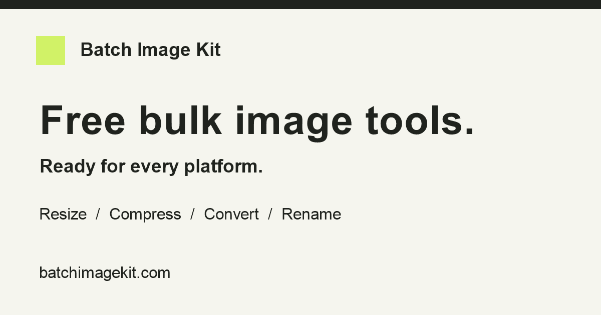
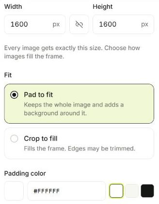
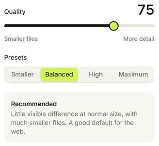
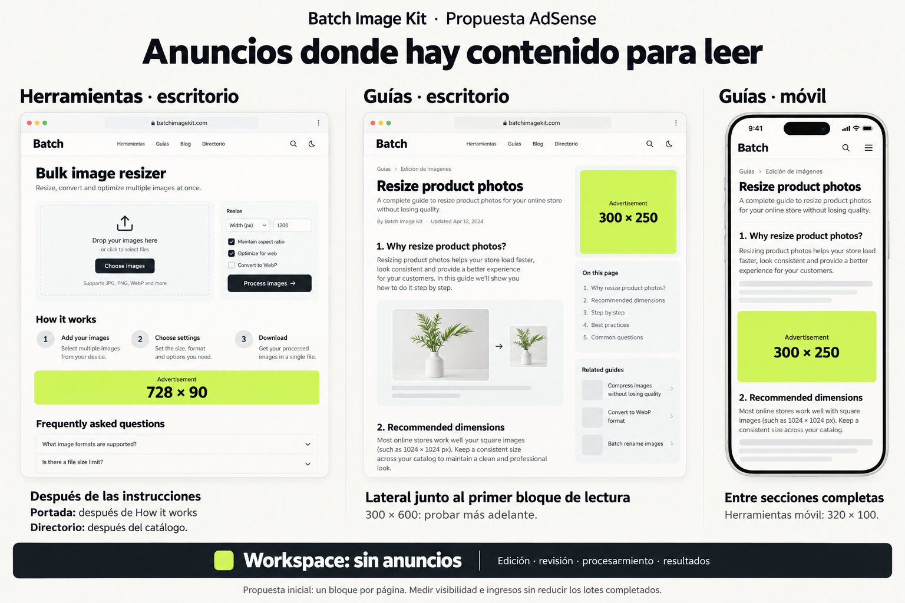

Batch Image Kit · 21 octubre 2026
Mejor presentación, guías visuales y un plan para monetizar.
Se revisaron las 27 páginas públicas, se ajustaron títulos y descripciones de las páginas que podían ser más específicas, se ilustraron las seis guías con nueve capturas reales y se agregó la navegación del sitio al Workspace. Los anuncios de este informe son una propuesta: no se cargó AdSense ni se activó publicidad real.
Estado de entrega: implementación y pruebas completadas; commit bf7d710 subido a main y confirmado en GitHub. En la comprobación posterior, Cloudflare mostraba una incidencia de GitHub que degrada la recepción de eventos de push y todavía servía 39da1fd. Esta actualización no se considera publicada hasta que node scripts/check-live-seo.mjs confirme los nuevos metadatos. No se modificaron credenciales ni la integración para forzar el despliegue.
1. Qué cambia en buscadores y al compartir
Conservamos la imagen Open Graph existente: PNG de 1200 × 630, fondo claro, tipografía oscura y acento lima. Ya cumple el pedido de una imagen minimalista. Cada URL usa su propio título, descripción, canonical y URL social; la imagen de marca es común a todas. Se completó el tipo MIME de la imagen y la coherencia de idioma al navegar, y la auditoría ahora exige las etiquetas Open Graph y Twitter sin duplicados.

La investigación combinó la documentación de Google con una revisión de resultados para bulk image resizer, compresión/conversión por lotes, Steam capsules y YouTube thumbnail/banner resizer. La tarea de búsqueda debe aparecer primero y el beneficio debe ser comprobable. Por eso se priorizan “bulk”, formatos concretos, descarga ZIP, gratuidad y procesamiento local. Se acortaron títulos con listas extensas de usos y se evitó prometer tamaños de archivo exactos, recuperación de calidad o resultados garantizados.
Ejemplos finales: Bulk Image Resizer – Free, No Uploads, Bulk Image Compressor – JPG, PNG & WebP, YouTube Thumbnail & Banner Resizer y Resize Product Photos Without Cropping. Cada uno termina con la marca. El renombrador se presenta como renombrador de imágenes para que el resultado no prometa compatibilidad con cualquier archivo.
Abrir vista previa de las 27 páginas: tarjetas con metadatos reales del build, buscador por URL y alternancia orientativa entre escritorio y móvil. Regenerar con node scripts/build-search-preview.mjs.
Son candidatos mejor alineados con el producto, no ganadores de una prueba de CTR. No se consultó Search Console en esta tarea ni se obtuvieron datos nuevos de volumen o dificultad. Google genera títulos y snippets automáticamente y puede reescribirlos por consulta. No existe un límite fijo de caracteres que garantice que se vean completos; la anchura del dispositivo interviene. Fuentes: títulos de Google y snippets y descripciones.
2. Guías con instrucciones visuales
Nueve recortes del producto real: carga, organización, dimensiones y padding, calidad, formatos, patrón de nombres, fondos, revisión y resultados. Están distribuidos en 16 secciones de las seis guías. Cada uno tiene texto alternativo, pie explicativo, dimensiones reservadas, carga diferida y enlace para ampliarlo. Las imágenes provienen del lote de muestra incluido; no se utilizaron archivos privados.
Se ensanchó la columna de lectura y el anuncio lateral se reserva para escritorio amplio. En pantallas intermedias la guía gana espacio. La captura de resultados aclara que sus ahorros combinan redimensionado, calidad y WebP: no atribuye el ahorro a una sola operación ni promete repetirlo con otros archivos.


3. Workspace con navegación completa
El encabezado normal del sitio aparece arriba, y debajo se conservan el nombre del lote, el contador, el progreso y preferencias. Se quitaron el logo, Tools y Help duplicados del encabezado interno, junto con el acceso redundante a abrir el Workspace cuando ya se está allí. Ambos encabezados permanecen visibles al editar. La navegación móvil mantiene el menú del sitio y el acceso inferior a ajustes.
4. Dónde pondría AdSense
El producto para obtener ingresos mostrando anuncios es Google AdSense; Google Ads corresponde al lado del anunciante que compra campañas. Para este sitio priorizaría ingresos por sesión y visibilidad, manteniendo la tasa de lotes completados. Las conversiones del anunciante no son la métrica que controlamos desde nuestra herramienta.

| Páginas | Ubicación inicial | Escritorio / móvil | Prioridad |
|---|---|---|---|
| 6 guías /help/* | Escritorio: lateral derecho alineado con el primer bloque de lectura. Móvil: después de la primera sección completa, sin separar un paso de su captura. | 300 × 250 / 300 × 250. Si no cabe, ocultar esa unidad antes de solicitarla. | 1. Un anuncio por página. |
| 4 herramientas básicas | Después de “How it works” y antes de FAQ; separado del área de carga y de los botones. | 728 × 90 / 320 × 100 si el ancho disponible lo permite. | 2. Un anuncio por página. |
| Steam y 10 kits de plataforma | En la sección editorial debajo del editor, después de las instrucciones y antes de la tabla de tamaños. Mantener toda la interacción y descarga libre. | 728 × 90 / 320 × 100. | 2. Aplicar solo si el contenido y el espacio permiten una separación clara. |
| Portada / | Después de “How it works”; conservar libre la primera pantalla y la elección de herramientas. | 728 × 90 / 320 × 100. | 3. Mantener solo si sus ingresos compensan la posible caída de uso. |
| Directorio /tools | Después del catálogo completo, separado de sus tarjetas y del buscador. | 728 × 90 / 320 × 100. | 3. Menor visibilidad esperada; medir antes de ampliar. |
| Workspace /app/*, revisión, proceso, resultados, errores y páginas legales | Excluir del plan inicial. Retirar los placeholders de editor/resultados antes de conectar la red. | Sin anuncios. | Proteger el flujo principal. |
| /help y /about | Sin unidades en la primera prueba. Concentrar el inventario en artículos y herramientas útiles. | Sin anuncios inicialmente. | Reevaluar con datos. |
Por qué: las guías ofrecen momentos de lectura; el usuario permanece en la zona visible sin operar controles sensibles. En el editor se interactúa y se arrastra contenido continuamente. AdSense advierte sobre anuncios cerca de botones, navegación o descargas por el riesgo de clics accidentales; también restringe pantallas sin contenido editorial suficiente. Fuentes: políticas de ubicación y pantallas sin contenido del editor.
Dimensiones y comportamiento: las medidas se eligen por el espacio real del contenedor, no solo por el ancho de pantalla. Reservar la altura para evitar saltos; mantener el rótulo “Advertisement”; cargar las unidades inferiores al aproximarse al área visible. La adaptación debe seguir los ejemplos admitidos por AdSense. Empezaría con unidades manuales, sin intersticiales, anclajes superpuestos ni refresco automático. Un 300 × 600 lateral sería un experimento posterior y solo en artículos suficientemente largos.
Cómo comprobar si conviene
- Medir una base: sesiones por página/dispositivo, herramientas iniciadas, lotes completados y descargas. Sin subir imágenes ni nombres de archivo a analítica.
- Primera prueba: una unidad por guía. Comparar mediante experimento con un control sin anuncios; mantener la asignación por sesión y suficiente muestra. No declarar ganador por pocos clics o pocos días.
- Mirar ingresos y uso juntos: ingresos por 1.000 sesiones, Page RPM, cobertura y Active View, junto a lotes completados por sesión. El CTR sirve de diagnóstico, no como objetivo aislado.
- Visibilidad: Google cuenta una impresión visible cuando al menos 50% del anuncio se muestra durante un segundo. Que se solicite una impresión no significa que alguien la vio. Definición de Active View.
- Expandir gradualmente: herramientas, luego portada y directorio. Vigilar LCP, INP y CLS, abandono y cambios en tráfico orgánico. Si cae la finalización del producto, mover o quitar el bloque antes de agregar más.
No se estima facturación sin tráfico por país, dispositivo, cobertura y RPM real. Regla de cálculo: ingreso estimado = páginas vistas monetizadas / 1.000 × Page RPM observado. Una mayor cantidad de anuncios no garantiza mayores ingresos ni más impresiones visibles.
Lo necesario antes de activar anuncios reales
Cuenta y sitio aprobados, identificador de editor y unidades, ads.txt con los valores entregados por Google, y gestión de consentimiento apropiada. El banner actual es un prototipo de preferencias; no debe tratarse como una CMP certificada. Para tráfico del EEE, Reino Unido y Suiza, revisar e implementar los requisitos de consentimiento de Google para publishers. La propuesta no realiza esa conexión ni inicia anuncios.
Validación
- Build de producción, TypeScript, auditoría SEO y 47 pruebas existentes correctas.
- 27 páginas públicas auditadas, con etiquetas sociales, canonical, enlaces e imágenes de las guías.
- Flujo real en navegador: ocho imágenes completadas, cero fallos; encabezados visibles durante edición, revisión, proceso y resultados.
- Workspace comprobado a 390 × 844: un logo, dos encabezados, menú y ajustes funcionales, sin desbordamiento horizontal. Guía comprobada en el mismo ancho.
- La vista previa de buscadores es una simulación basada en los metadatos, no evidencia de cómo Google ya indexó el cambio.
Ver todas las tarjetas de búsqueda · Abrir infografía · Guía en producción (pendiente de esta actualización)